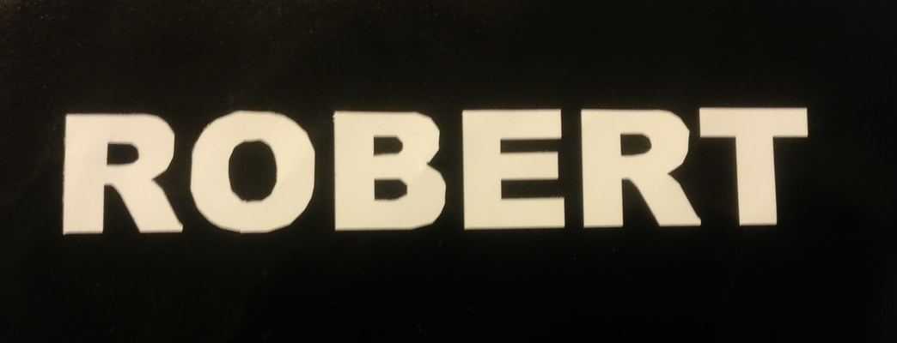
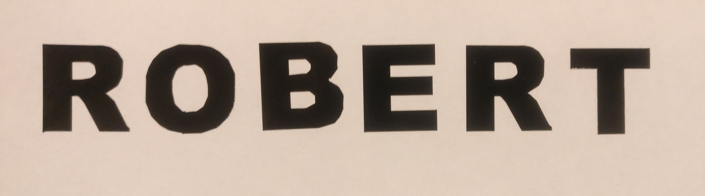
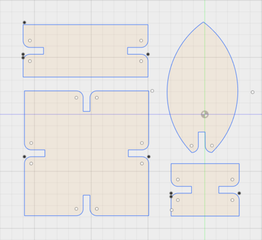
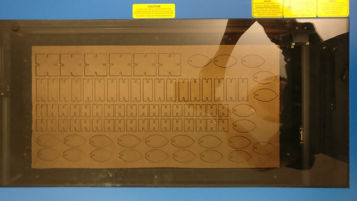
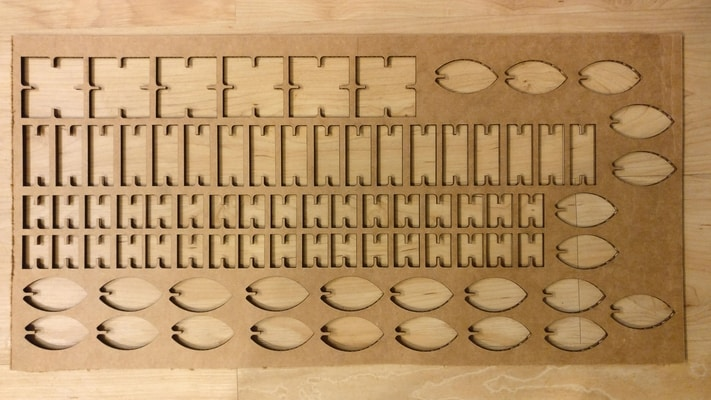
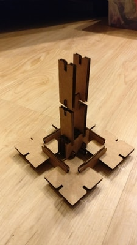
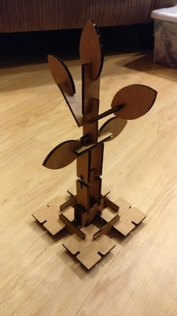
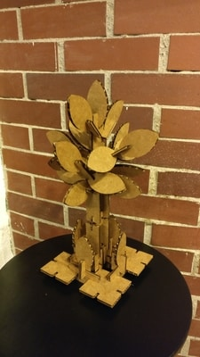

I did a simple cut of my name. The design was a simple png file I made in paint, which was vectorized and sent to the vinylcutter by neil's code.
 I decided to make a tree.
First, I used autodesk fusion 360 to sketch 4 main types of pieces, then ported it over to corel draw for the laser cutter. The inlets are parametrically designed. Earlier in the group we did several test cuts to figure out the best settings for the laser cutter and the cardboard. For this project, the inlets are 3 mm wide and 6 mm deep. The corners at the inlets are also rounded for smoother connections. One key thing to do is to set the color of the vectors to red rgb=(255,0 0).
Cut the pieces! Everything fit inside a 1 ft x 2 ft sheet of cardboard.
 Put something together!
  